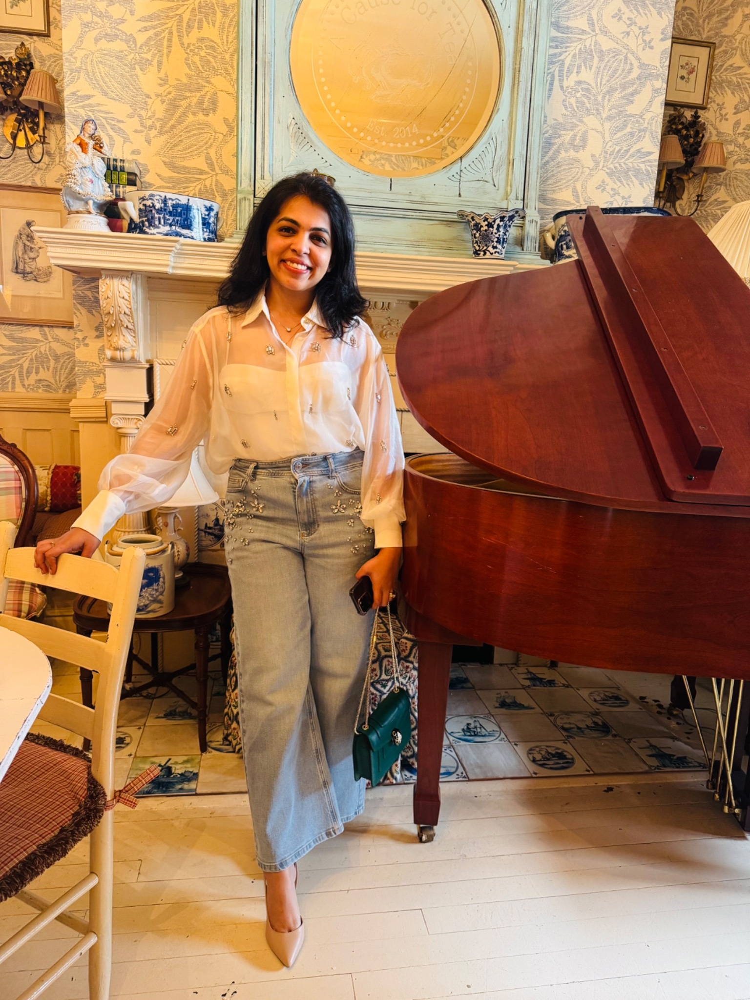

Curious about people, ideas, cultures, and how things work. I like turning complexity into something useful — and I care deeply about the people I meet along the way.

I’m deeply curious about people — where they come from, what shapes them, and the stories they carry. I love discovering different cultures, meeting new people, and finding the unexpected connections that make the world feel a little smaller.
I tend to care deeply about the people in my life. When I connect with someone, I’m emotionally invested and genuinely show up for them. Being someone people can rely on matters a lot to me.
At work and outside of it, I’m drawn to meaningful conversations, new experiences, and ideas that make me see things differently.
Always curious about places, traditions, perspectives, and ways of life different from my own.
I love meeting people, listening to their stories, and building genuine connections.
I care deeply, stay present, and try to be someone others can count on.
My work sits at the intersection of strategy, product thinking, growth, and AI transformation. If you want the detailed version, I’ll happily point you to my résumé rather than make you read it twice.
Open my latest résumé for the full professional story.
Here’s a talk from the Fleurix Conference in 2025 — one of the places where I get to explore ideas, connect with people, and share what I’m learning.
Thoughts, observations, lessons, and the occasional rabbit hole — shared on Substack.
↗I ask questions, explore perspectives, and enjoy learning something I didn't know yesterday.
I like making complicated problems easier to understand and act on.
I believe good work gets better when people feel heard, trusted, and included.
I’d love to hear from you. The internet is big; meaningful conversations don't have to be complicated.